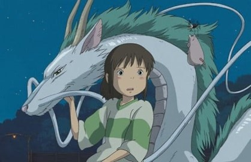
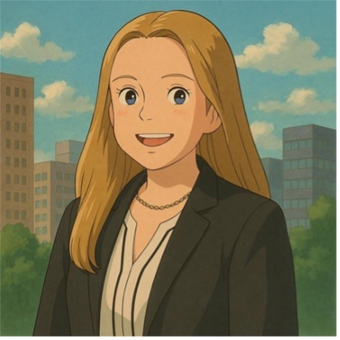

Background
Throughout my time at UofSC as a student, Teaching Assistant, and Research Assistant, I have been exposed to a wide range of issues at the intersection of computing and society. Most recently, my enrollment in CSCE 581 (Trusted Artificial Intelligence) has brought into my knowledge a crisis in the field of Artificial Intelligence, specifically Generative AI. As seen in Key Insight 2, there is a lack of accountability surrounding the unauthorized or illegal use of digital and physical artwork in the training of generative models. With the rise in popularity and use of text-to-image applications, artists of all backgrounds are finding their work scraped from the internet without their consent, compensation, or acknowledgement. These trained models then gain the capability to mimic a creator’s unique style, effectively profiting from their artistic identity [1]. The oligarchical nature of the AI industry along with limited modern legislation provides little recourse for artists to be compensated or be provided justice. Additionally, the cloudiness of these models plays a major hand in leaving artists with little technical means of proving their work was used. Without intervention, independent creators will remain powerless against large tech companies. My goal is addressing this issue by creating a local pilot program of Lineage, a tool for artist’s seeking to empirically prove that their work is being utilized by a large language model (LLM).
The Problem in Pictures


What Artists Are Up Against
One of the biggest problems being faced by digital artists today is the absence of tools that can detect the unauthorized use of their work in Generative AI models, specifically text-to-image models such as DALL-E 3, Stable Diffusion, and Imagen. Large-scale institutions have already tried to combat this dilemma but results in court often favor the tech giants. For example, in June 2025, Bartz v. Anthropic [2] found that generative LLM training was “exceedingly” transformative, therefore qualifying to use under fair use. Furthermore, many affected creators/artists lack both the legal resources as well as technical evidence needed to pursue accountability. Current frontier AI models operate as what is called “Black Box” models. This means that the underlying mechanisms limit users’ ability to trace whether their art was trained on, or whether their distinct style has been replicated by the generative system. The appeal and profits of these companies come from models that are trained off billions of people’s personal content, but when asked, they fail to allow this content to be accessible by those being most harmed. Without a reliable detection method, artists are left to rely solely on visual resemblance or hunches, which holds little weight in allowing reprieve to said parties.
How Lineage Works
Development & Validation
- Acquire and catalog open-source art datasets.
- Build style and content vectors to create high-dimensional classification for known artists, which are numeric representations describing both the content and the style of each image.
- Test the vector engine for accuracy using AUC, ROC, and Confusion Matrix metrics.
Community Outreach & Pilot Testing
- Partner with UofSC student art organizations to identify volunteer testers.
- Introduce the tool to a small group of independent creators.
- Collect feedback on usability and accessibility.
Legal Framework
- Engage local legal and copyright resources to assess how findings could support formal dispute resolution.
- Identify scaling opportunities beyond UofSC after pilot completion.
Measuring Success
My evaluation plan mainly focuses on fitting the adapting scene of AI text-to-image technology as well as fitting the tool to the needs of users. Throughout implementation, I will continuously be gathering and implementing feedback from pilot group to ensure that Lineage remains relevant and responsive as the gen AI landscape evolves. Additionally, feedback will be used to assess whether the findings are accurate, interpretable to users, and actionable enough for artists to be willing to use it. Ultimately, success will be determined by the rate at which creators feel more empowered and equipped to advocate for themselves against unauthorized use of their works.
- Bendel, O. Image synthesis from an ethical perspective. AI & Society 40, 437–446 (2025). doi.org/10.1007/s00146-023-01780-4
- NPR. “Federal court rules in AI company’s favor in landmark copyright infringement lawsuit.” Bartz v. Anthropic, June 2025.
- AGG Publications. “The Fine Line Between Inspiration and Infringement: Studio Ghibli vs. AI Generator.” agg.com